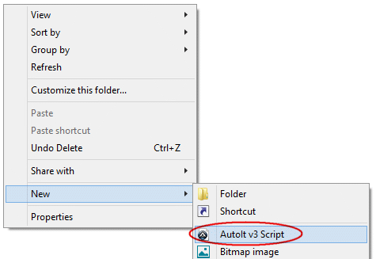
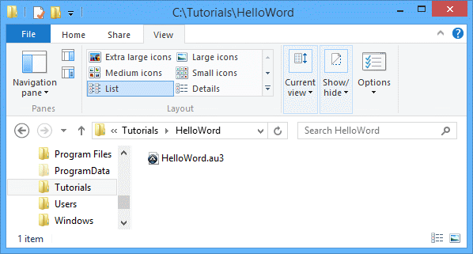
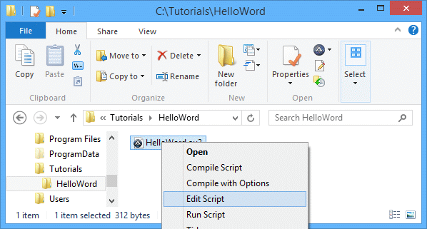
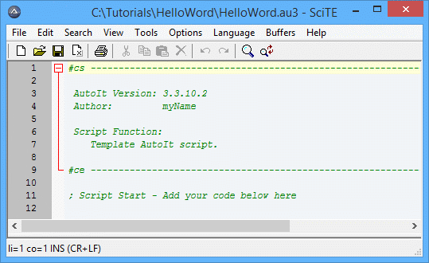
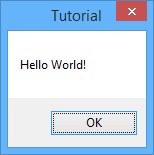
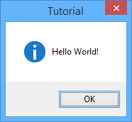

Этот урок объясняет основы создания скрипта AutoIt и его запуска. Предполагается, что вы уже полностью установили AutoIt v3 с помощью предоставленного инсталлятора.
Сначала откройте папку, в которой хотите создать скрипт. Щелкните правой кнопкой мыши в папке и выберите Создать / AutoIt v3 Script.

Будет создан новый файл, который сразу же позволит переименовать его на что-то более подходящее. Измените «New AutoIt v3 Script» на «helloworld», оставив расширение '.au3' в имени, если оно видно.

Теперь, когда мы создали файл скрипта, нам нужно отредактировать его, чтобы он делал что-то полезное. Щелкните правой кнопкой мыши на helloworld.au3 и выберите Edit Script.

Откроется редактор SciTE, и вы увидите примерно следующее:

Код, который вы видите – это просто комментарии, которые можно использовать для организации скриптов. Строки, начинающиеся с точки с запятой ;, рассматриваются как комментарии (пропускаются). ; похожа на оператор REM в батнике DOS. Шаблон хранится в «C:\Windows\ShellNew\Template.au3» – вы можете настроить его под свои требования.
Теперь мы хотим сказать AutoIt отобразить окно сообщения – это делается с помощью функции MsgBox.
В конце файла введите следующее:
#include <MsgBoxConstants.au3>
MsgBox($MB_OK, "Tutorial", "Hello World!")
Все функции принимают параметры; MsgBox принимает три – флаг, заголовок и сообщение. Флаг – это число, которое меняет то, как MsgBox отображается – мы будем использовать $MB_OK пока. Заголовок и сообщение – оба параметра типа string – при использовании строк в AutoIt заключите текст в двойные или одинарные кавычки. "This is some text" или 'This is some text' – оба варианта работают хорошо.
Теперь сохраните скрипт и закройте редактор. Вы только что написали свой первый скрипт AutoIt! Чтобы запустить скрипт, просто дважды щелкните на файле helloworld.au3 (вы также можете щелкнуть правой кнопкой мыши на файле и выбрать Run Script).
Вы должны увидеть это:

Теперь давайте ещё раз посмотрим на параметр flag функции MsgBox. На странице документации мы можем увидеть различные значения, которые меняют то, как MsgBox отображается. Значение $MB_OK просто показывает простое окно сообщения с кнопкой OK. Значение $MB_ICONINFORMATION отображает окно сообщения с иконкой информации.
Отредактируйте скрипт снова и измените $MB_OK на $MB_ICONINFORMATION, чтобы у вас было:
#include <MsgBoxConstants.au3>
MsgBox($MB_ICONINFORMATION, "Tutorial", "Hello World!")
Запустите скрипт, и вы увидите:

Экспериментируйте с различными значениями флага, чтобы посмотреть, какие результаты вы можете получить. Помните, если вы хотите использовать более одного значения флага, просто сложите нужные значения.